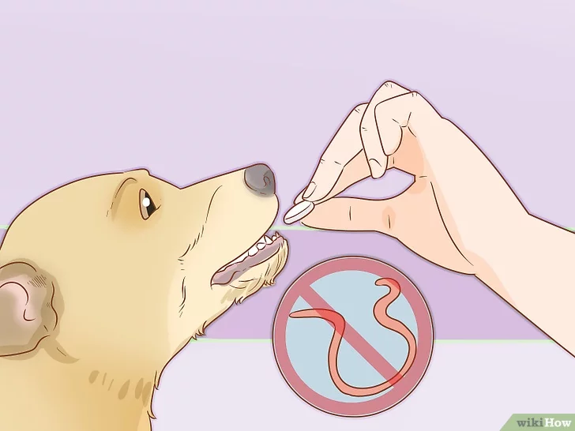
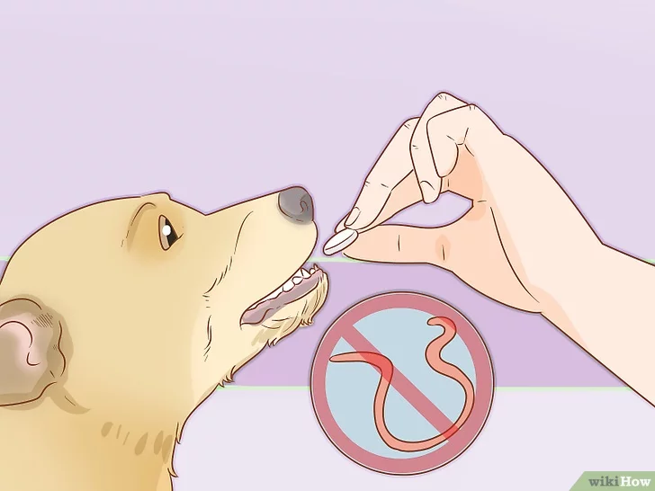

4 Consigli per prendersi Cura del proprio Animale Domestico
1. Prenditi Cura della sua Salute
 

Rivolgiti a un buon veterinario affidabile. Un metodo valido per la scelta del medico è quello di valutare se risponde prontamente, in maniera esaustiva alle tue domande e di osservare come interagisce con il cane. Dovrai portargli il tuo amico a quattro zampe per dei controlli regolari; quindi, se il dottore che hai scelto è sempre troppo occupato, dovrai rivolgerti a un altro. Sentiti libero di cambiare professionista anche dopo avergli fatto visitare il cane. Ricorda che dovresti avere inoltre il numero di un ambulatorio o una clinica di emergenza aperti 24 ore su 24 anche nei fine settimana.
Vaccinalo. Il veterinario ti informerà delle malattie comuni nella tua regione e quelle contro cui dovrai vaccinare l'animale. In genere, le vaccinazioni vengono aggiornate attraverso delle iniezioni regolari di richiamo, che possono avere frequenza annuale o triennale, in base al tipo.
Applica regolarmente dei prodotti preventivi contro i parassiti. È importante trattare l'animale con farmaci comuni contro gli ascaridi; la frequenza della somministrazione dipende dallo stile di vita dell'animale.
2. Dagli da Mangiare e da Bere
Offrigli cibo di alta qualità. Leggi l'etichetta dell'alimento che scegli. I primi due ingredienti della lista dovrebbero essere un tipo di carne e non un sottoprodotto della stessa o cereali. In questo modo, sei certo che il cibo è ricco di proteine e non solo di riempitivi. Chiedi alcuni consigli al veterinario; egli è sicuramente in grado di indicarti l'alimento giusto per il tuo animale o le dimensioni delle porzioni
Nutri il cane rispettando un programma regolare. Dovresti preparare due pasti al giorno; valuta la quantità corretta di alimenti che dovresti dargli ogni giorno (solitamente, trovi questi valori sulla confezione stessa del cibo) e dividila in due pasti. La prima metà dovrebbe essere fornita al mattino e la seconda alla sera. Una routine alimentare costante aiuta anche l'addestramento per le funzioni fisiologiche. Il cane dovrebbe "andare in bagno" 20-30 minuti dopo il pasto.Mettigli a disposizione l'acqua. Non ha solo bisogno di cibo per sopravvivere; l'acqua è altrettanto importante, se non di più; devi quindi fare in modo che ne abbia sempre a disposizione. Questo non significa che devi dargli acqua quando non è fattibile, ad esempio in auto, ma se possibile dovresti sempre lasciargli una ciotola di acqua potabile e pulita.
3. Trattalo con Rispetto e Amore
Trattalo con rispetto. Non punirlo mai con la forza fisica e non umiliarlo in nessun modo; questo significa anche dargli un nome rispettoso, perché quelli come "Bestia" o "Killer" influenzano il modo in cui le persone si approcciano all'esemplare. Se si comporta male, rivaluta sempre cosa è successo e chiediti quali azioni hai fatto (o non hai fatto) che possono aver contribuito all'evento.
Instaura un rapporto di amore e rispetto reciproco. I cani ti amano per sempre se li tratti nel modo giusto. Passa del tempo con il tuo amico peloso per scoprire la sua personalità e cosa lo spinge a comportarsi in un certo modo. Più tempo trascorri con l'animale e più la vostra vita in comune è appagante. Qualunque cosa tu faccia, non picchiare mai il cane e non sottoporlo ad abusi. La punizione peggiore per questi animali è quella di essere sgridati una volta che l'azione è compiuta e conclusa; i cani dimenticano e non capiscono il motivo per cui li stai sgridando.
4. Giochi, Socializzazione ed Esercizio
Fai in modo che l'animale possa muoversi molto. Forniscigli l'opportunità di fare parecchia attività fisica. Un'abbondanza di movimento permette di bruciare le energie in eccesso che, se accumulate, portano a problemi comportamentali, come masticare gli oggetti, scavare buche o abbaiare troppo. Ricordati di passeggiare con il cane. Dovresti fare almeno due piccole passeggiate o una lunga al giorno; la lunghezza del percorso varia in base al tipo di cane che possiedi.
Fallo socializzare. I cani hanno bisogno di imparare a relazionarsi con altri cani, animali e persone per diventare degli esemplari adulti equilibrati. Fai in modo che il cucciolo entri in contatto il più possibile con persone, suoni, odori e ambienti diversi fin da quando ha poche settimane di vita. Tutte le esperienze che vive fino alle 18 settimane d'età (momento in cui si chiude la "finestra" della socializzazione) verranno considerate normali in futuro e non come fonte di paura